If you want to see tutorial in a separate web browswer window click here.
Positioning on Screen Part III
We will be using a different event type to rotate the object. Since this is not just happening on one frame we need to rotate it every frame. This is the perfect time to use our second event type a Step event. Press the Add Event and select Step | Step from the menu.
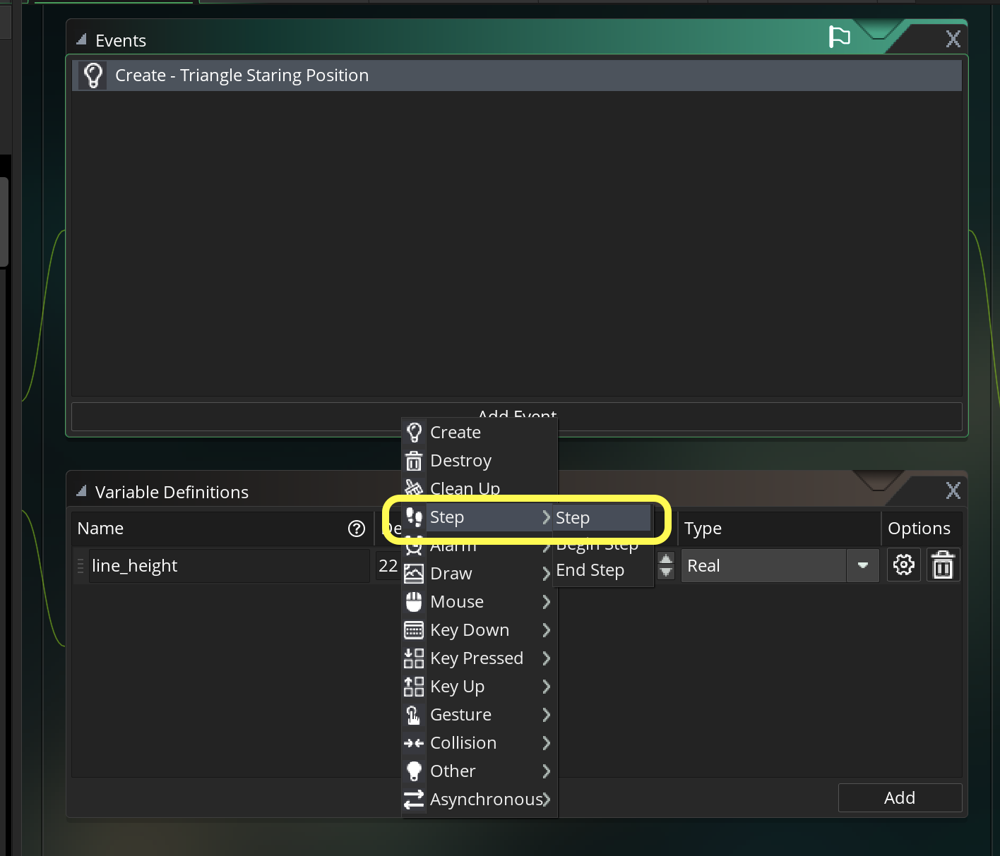
To rotate the player there is a variable that is used to determine the angle the player is facing at. The variable is called image_angle.
image_angle is set by changing its angle in degrees. To rotate counter-clockwise we add degrees positively then we rotate clockwise by subtracting degrees. You can see below that a round trip is 360 degrees.
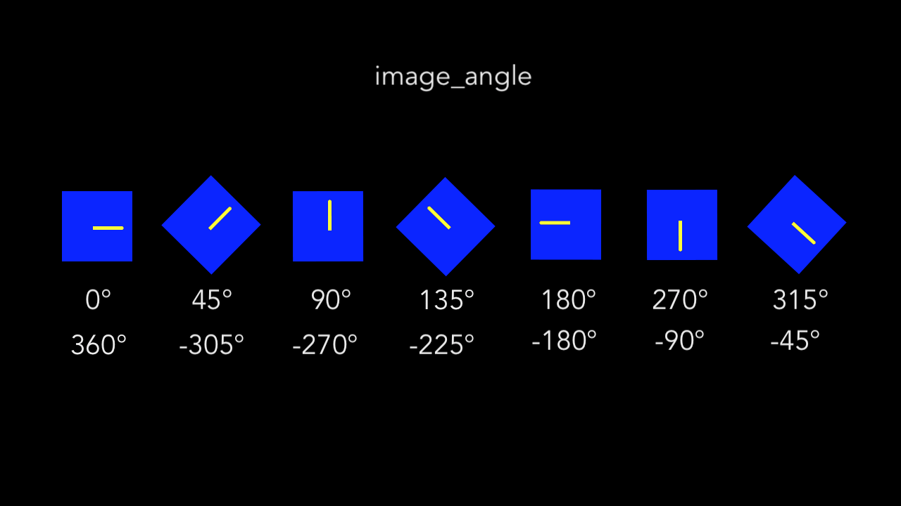
We will start by rotating counter-clockwise. We will add 5 degrees every frame. The level defaults to 30 frames a second so it will be rotating 5 * 30 = 150 degrees per second. To alter the image_angle variable we will add 5 degrees to itself. So it starts at 0, goes to 5 in the second frame, 10 in the third frame, 15 in the fourth frame etc...
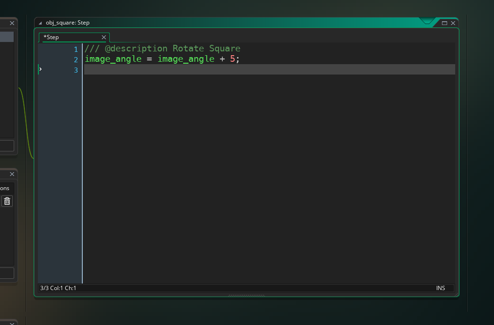
Run the game by pressing the  Play Button. Notice that the axis the sprite rotates around is its origin. This is at the top left corner.
Play Button. Notice that the axis the sprite rotates around is its origin. This is at the top left corner.

Now lets prove that this is true. If this is the case the triangle should rotate on its center. Lets add a Step | Step event to obj_triangle by pressing the Add Event button.

Lets rotate the triangle clockwise so we will subtract by 5 each frame. So it starts at 0, goes to -5 in the second frame, -10 in the third frame, -15 in the fourth frame etc... Add the following script to obj_triangle:
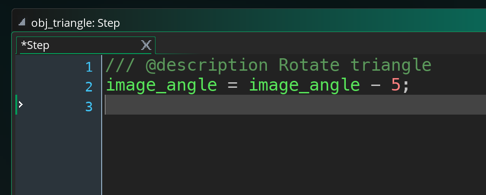
Run the game again by pressing the  Play Button. Notice that the triangle rotates on the axis whose origin is centered horizontally and vertically wihin the sprite:
Play Button. Notice that the triangle rotates on the axis whose origin is centered horizontally and vertically wihin the sprite:
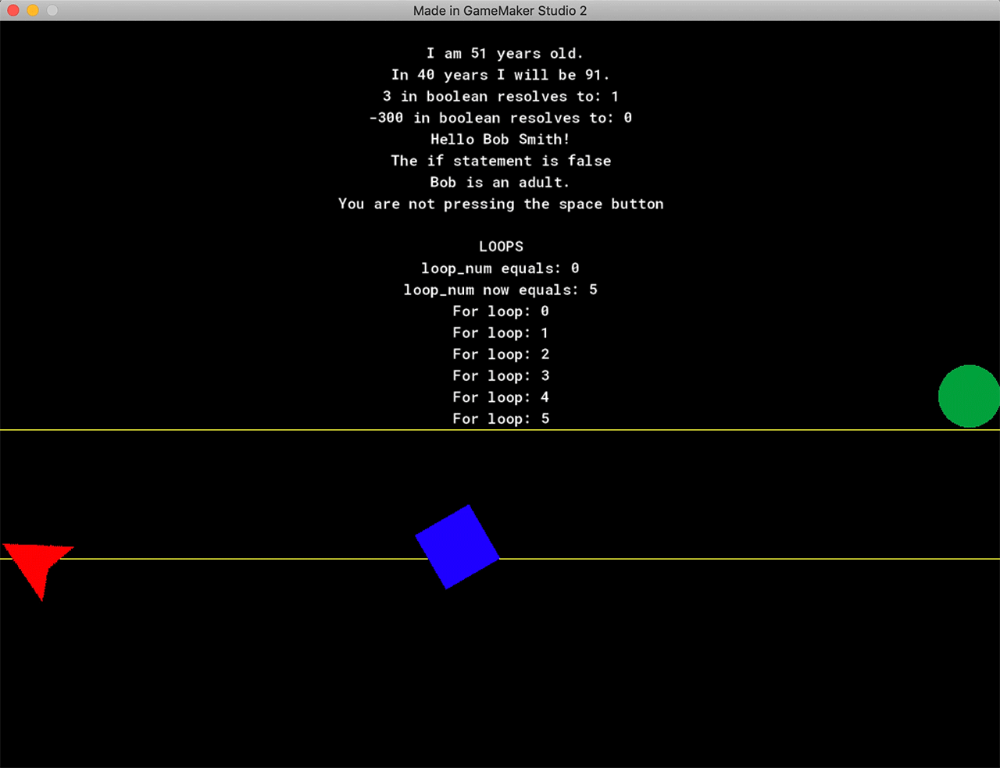
Now lets fix the origin on the square so it is positioned in the center and rotates in the middle of the sprite. Open spr_square and click on the drop down menu that says Top Left. Select Middle Center instead. Look at the target reticule update automatically:
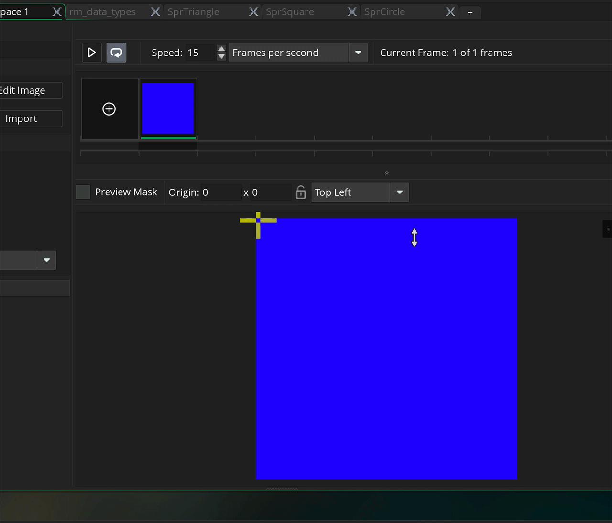
Run the game again by pressing the  Play Button. Notice that the square is now centered vertically and rotates on its center.
Play Button. Notice that the square is now centered vertically and rotates on its center.
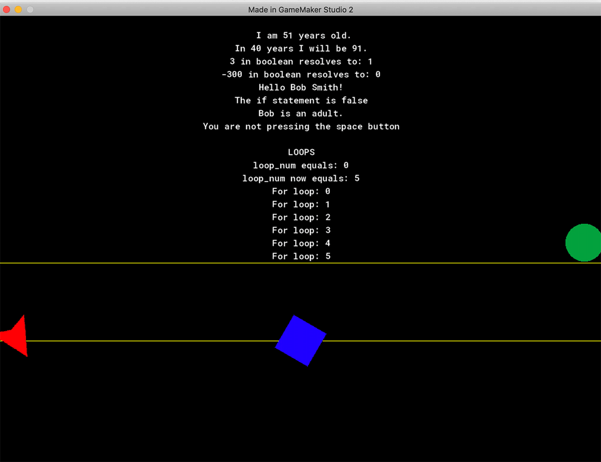
Now lets get the circle positioned properly. Add a Variable Definition to obj_circle called line_height and set it to 22.
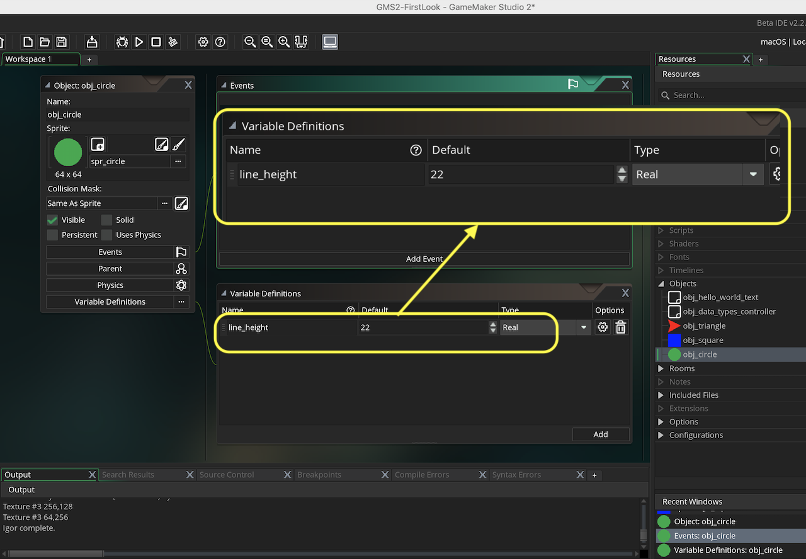
We need to position it in the center. Now we need to add a Create event to obj_circle:
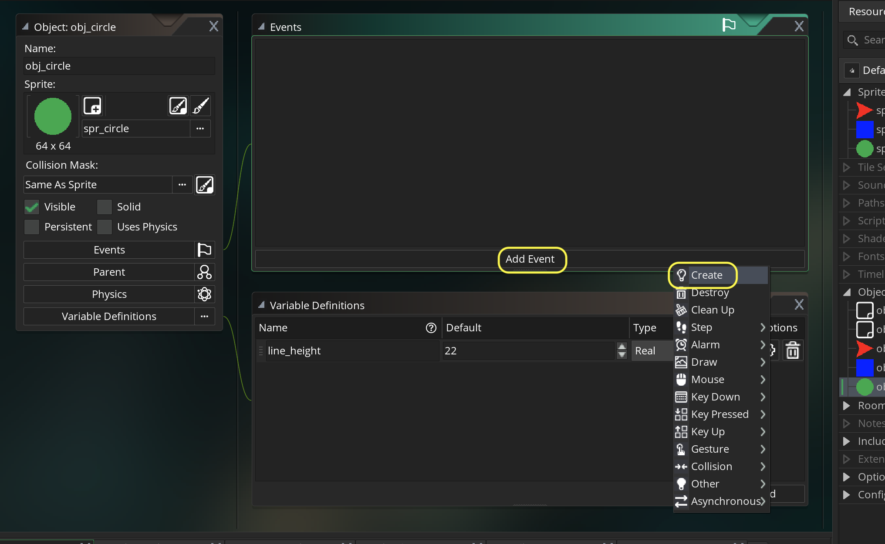
Where is the far right side of the room? We can open up our current room and look to see what the width is. It is set to 1024. We could use this number but it would be hard coding the value. We might want to adjust the room size when we are making changes later on. There is a variable called room_width that holds this value.
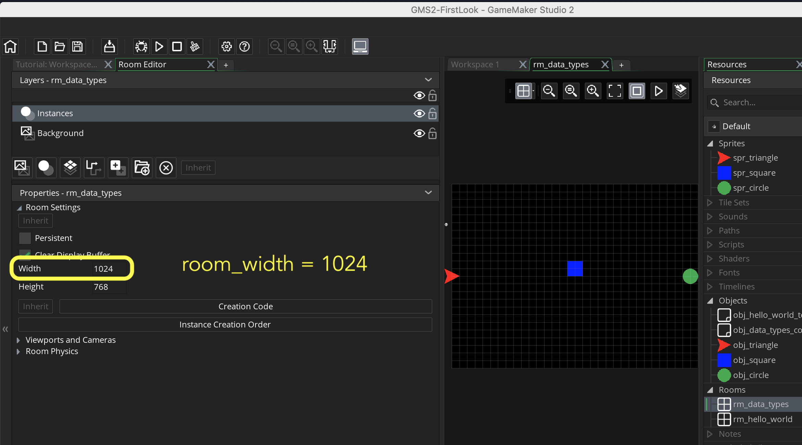
Ok, lets set the y on the y-axis to the 25th line and set the x to room_width. Type the below script in obj_circle: Create event.
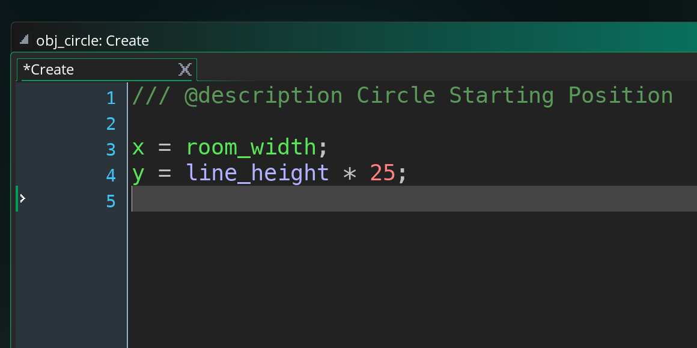
Run the game again by pressing the  Play Button. Woops we have a major problem. It looks like there is nothing in the room. We do not see the circle at all. Now that does not mean it is not in the game, it just means that it is not in the room. In fact, it is one pixel outside the room on the right. Since we have put it on the very right hand side of the room and its origin is on its left side it is just outside the room. In the image below the dotted circle represents the approximate position of this sprite that we can't see.
Play Button. Woops we have a major problem. It looks like there is nothing in the room. We do not see the circle at all. Now that does not mean it is not in the game, it just means that it is not in the room. In fact, it is one pixel outside the room on the right. Since we have put it on the very right hand side of the room and its origin is on its left side it is just outside the room. In the image below the dotted circle represents the approximate position of this sprite that we can't see.

Open up spr_circle and center the origin like we did previously on the other two sprites:
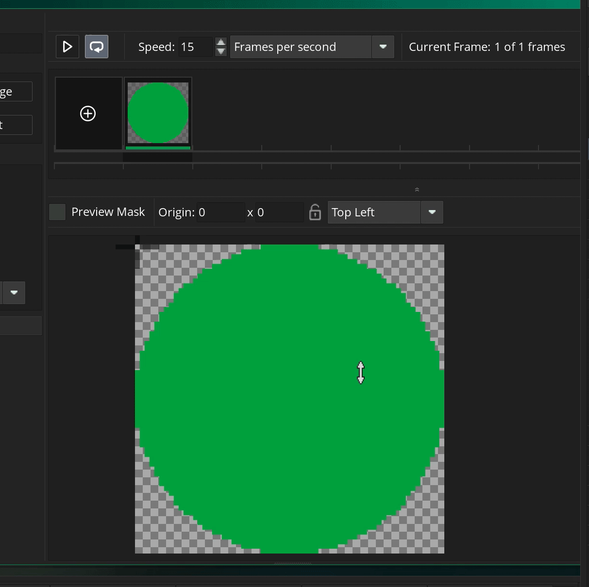
Run the game by pressing the  Play Button. Now that is a bit better now only half the sprite is off the screen. This makes sense as it puts the origin (center of the circle) at the right edge of the screen. We need to move it to the left by half a sprite width:
Play Button. Now that is a bit better now only half the sprite is off the screen. This makes sense as it puts the origin (center of the circle) at the right edge of the screen. We need to move it to the left by half a sprite width:
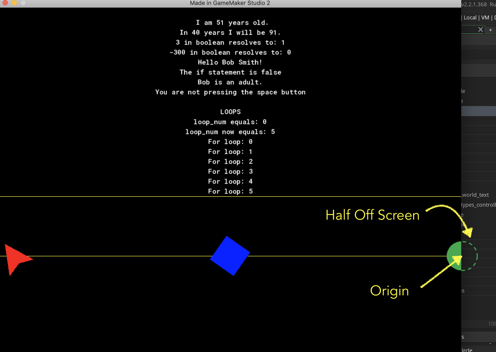
Go back to obj_circle and adjust its Create script by subtracting sprite_width * .5 (same as dividing sprite_width by two). Notice that we put it in parenthesis. We do not need to do this is because it will do the multiplication BEFORE the subtraction but we are doing it to be clear on what we intend to do.
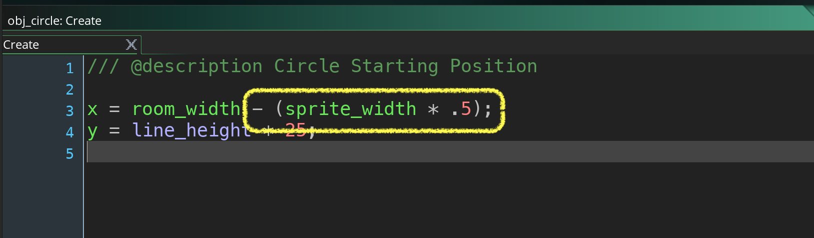
Run the game again by pressing the  Play Button. Now all the sprites are positioned properly!
Play Button. Now all the sprites are positioned properly!
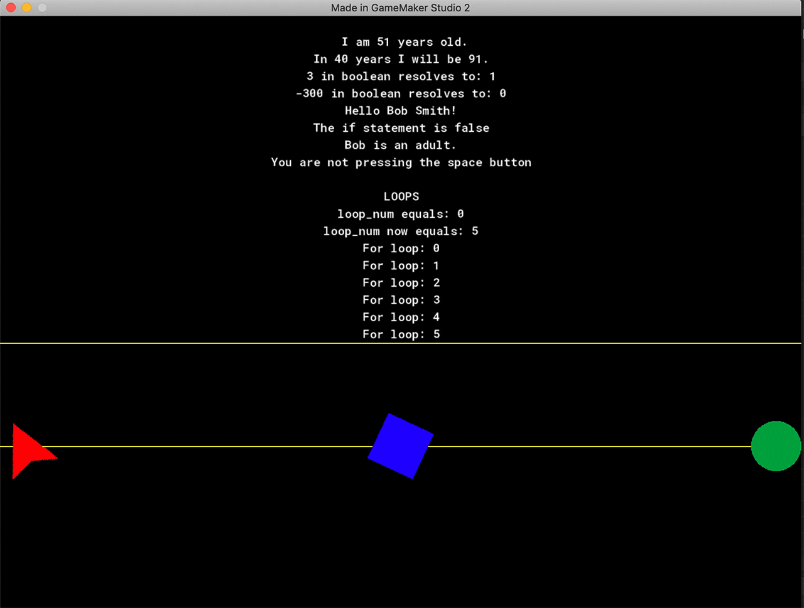
Now you can finish this room off yourself by rotating the circle in a new step event. Also, make sure you put a mark on the circle to actually see the rotation (a solid color will appear not to move). It should looks something like this:
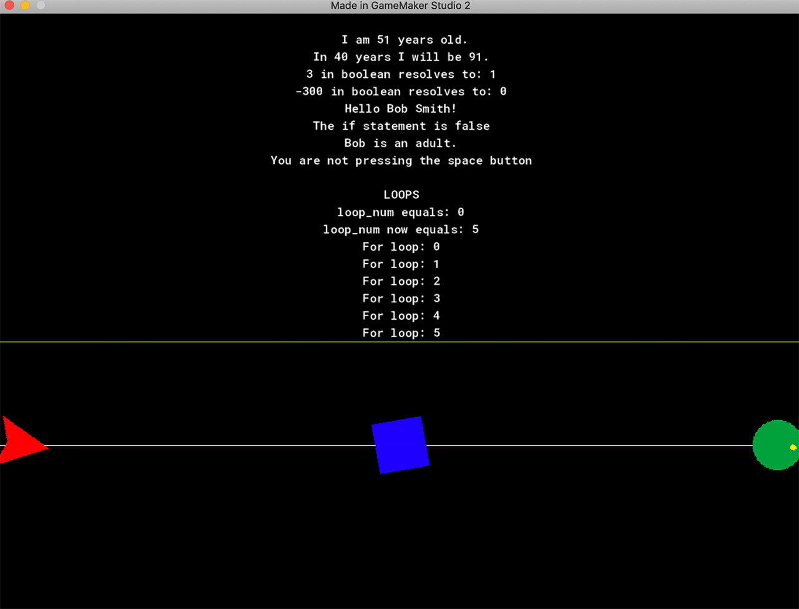
In the next section we will look at errors.